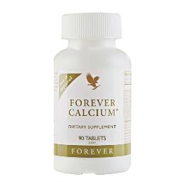

صيغة مبتكرة لدعم صحة العظام
الكالسيوم عنصر أساسي لصحة العظام والأسنان. من المهم الحفاظ على مستويات كافية من الكالسيوم وفيتامين د لتحقيق ذروة كتلة العظام والحفاظ عليها من أن تصبح هشة أو ضعيفة. وقد أظهرت الأبحاث أيضًا أن المستويات المناسبة من فيتامين د والكالسيوم يمكن أن تساعد في تقليل خطر الإصابة بهشاشة العظام عند دمجها مع ممارسة التمارين الرياضية بانتظام واتباع نظام غذائي متوازن.
يعد فوريفر كالسيوم® مصدراً متفوقاً لمعادن بناء العظام بفضل تركيبتنا المتطورة. يستخدم مزيجنا الحصري مالات ثنائي الكالسيوم الحاصلة على براءة اختراع، والتي تبقى في الدم لفترة أطول من الكالسيوم العادي، مما يسمح لجسمك بامتصاص المزيد من هذه المعدن الحيوي.
أضفنا أيضًا كميات مثالية من فيتامين د والمغنيسيوم والزنك للمساعدة في الحفاظ على صحة العظام مع ضمان أقصى امتصاص وتوافر حيوي.
لا يتلقى الجميع الكمية المناسبة من الكالسيوم وفيتامين د من خلال النظام الغذائي وحده، ولهذا السبب قمنا بصياغة هذا المكمل لسد الفجوة الغذائية ودعم صحة العظام. احصل على الكالسيوم الذي يحتاجه جسمك بسهولة مع فوريفر كالسيوم®.